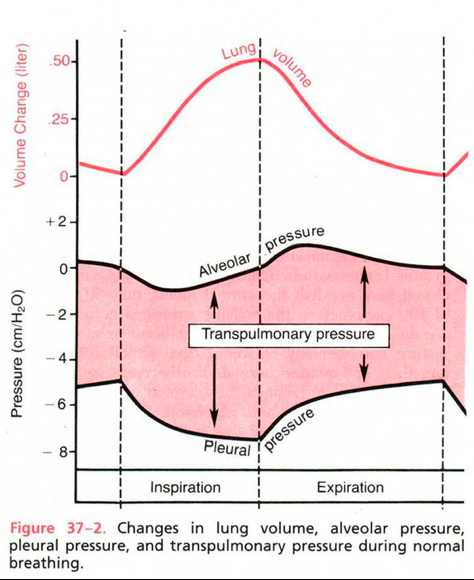

- Relative pressures
- Pleural P – ALWAYS lower than alveolar P & atmospheric P
- ALWAYS negative (sub-atmospheric)
- Alveolar P – may be “-” (inspiration) or “+” (expiration)
- Trans-pulmonary P = D P across the wall of the lung
- = Alveolar P – Pleural P
- Always positive
- Increasing difference vs. decreasing difference.
- *Pressures relative to atmospheric pressure.
